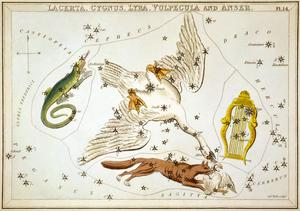
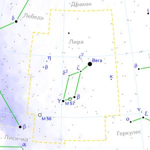

ИсторияДревнее созвездие. Включено в каталог звёздного неба Клавдия Птолемея «Альмагест». Лира — любимый музыкальный инструмент в Древней Греции, и, очевидно, поэтому мифы называют целый ряд владельцев его прототипа: Арион, Орфей и Аполлон, получивший её от Гермеса. Вега в переводе с арабского — «падающий коршун». Считали, что это коршун, которого Зевс послал похитить тело тартарианской нимфы Кампа у Бриарея, когда тот собирался принести её внутренности в качестве сакральной жертвы. В старинных атласах Лира часто изображается в когтях коршуна. НаблюдениеВ средних широтах России созвездие видно круглый год, однако лучшие условия наблюдения — с мая по октябрь. Частично скрывается за горизонтом зимой (и полностью на юге России), но видно сразу после захода Солнца или перед рассветом. На юге бывшего СССР созвездие кульминирует в области зенита. О созвездииЛи́ра (лат. Lyra, Lyr) — небольшое созвездие северного полушария, лежащее между Геркулесом и Лебедем. |
 |
|  | |